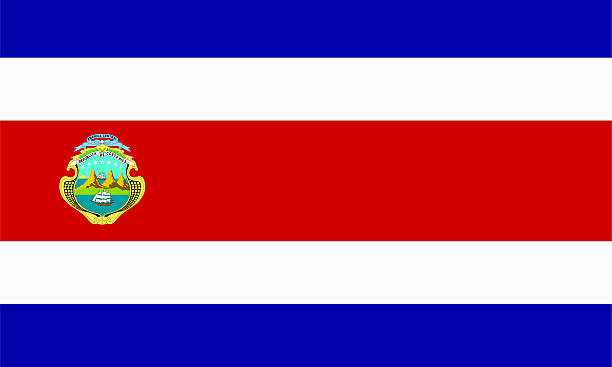

Costa Rica, denominada oficialmente República de Costa Rica, es un país de Centroamérica
Limita con Nicaragua al norte, el mar Caribe al este, Panamá al sureste y el océano Pacífico al oeste.
En el menú de arriba se puede encontrar información acerca de las 7 provincias.
